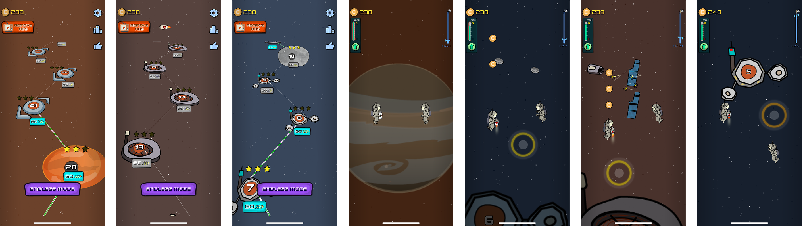
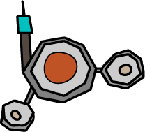
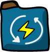

Spaceman
Exploring the vast universe by a single tap.
In 2050, humankind has been building a vast number of star bases over the Solar system. The Crew brothers, one in their job of flying to Jupiter base, their ship hit a meteoroid and the explosion destroyed almost the ship, luckily one thrust engine still was working fine. Astronauts took turns to grab firmly on the engine, they continued on their journey to visit each star bases.
What make this game is worth a try
- Easy to control with one finger. There is no complicated control but it is also challenging - the controlling is unlike anything else before.
- The Solar planets are simulated on your palm.
- Light and simple graphics - wait! What is that? Yes it is but it is pretty cool and it is worth the performance.
- Amazing levels await in this game. More planets (levels) even something more the Solar system may be added in future updates!
Controlling
There is only one jet engine to fly. To control, players will touch down and hold a bit to thrust the left man fly up. Release and repeat the steps to wrap turns to control the right man.
The controlling is unlike anything else before. Single touch, hold, and release at the right time is all you need to do.
Level
For each completing level you will fly across the next harder levels. New tools/equipment also will be found in further levels; along with new challenges.
Flag

After reaching a planet/moon, you can plan your country's flagpole on this planet and take a screenshot to share with everybody.
Fuel tank
Fuel tank of the thrust engine is limited, remember to collect the supply fuel tanks on your way.
Coin
Coin is one kind of asset that you properly should collect on your journey. Coin is used to upgrade the capacity of fuel tanks and much more.
Star
Collect stars on the trip, it determines how good you are on each complete level.